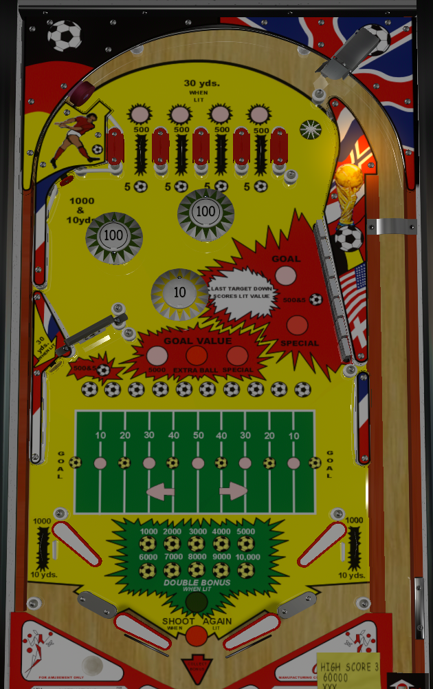

Quarterback is the 2-player version. Kick Off! is the 4 player version. Despite different art and sports themes, the two games are identical.
The wacky flipper setup and table design in general make simply keeping the ball alive somewhat of a feat on this game. In the event of a somewhat controlled flip occurring, aim for the spinner from the right flippers or the drop targets/lane back to the top of the table from the left flippers to work toward the goal of getting yards and scoring goals. If an out lane drain happens, hold up that side's flipper and try to nudge the ball back into play off the post in the out lane and between the flippers.
There are 4 top lanes. Either lanes 1 and 3 or lanes 2 and 4 are lit; any switch hit alternates which pair is lit. Lit lanes score 3,000 points, unlit lanes score 500. The star rollover to the right of the four top lanes scores 500 points.
All scoring on Kick Off! with the exception of the pop bumpers awards Yards at the rate of 1 yard per 100 points.
Try to advance down the football field in the direction of the lit arrow on the playfield to score a Goal. At the start of a ball, you will be on the left 20 yard line, so the first goal requires collecting 80 yards. After that, the direction arrow will flip, and it takes 100 yards to go all the way back down the field in the other direction for another Goal. The sports field shows the ball's position in 10 yard increments; the 10 soccer balls above the field show your position in 1-yard increments. Advancing the ball to either 20 yard line, either 40 yard line, or either Goal will increase the end of ball bonus by one step. The first Goal on a single ball scores 5,000 points; the second scores an instant extra ball; any Goals after that in a single ball award an instant special.
Each target down scores 500 points and 5 yards. Completing the 7-bank instantly advances the ball all the way to the Goal and awards the current Goal award.
Kick Off! has four flippers. The lower flippers are in a conventional location. The upper flippers are outside of and slightly above the lower flippers. There are no in lanes or slingshots. Flipper buttons operate both flippers on one side at the same time. When trying to get the ball under control using the lower flippers, do not simply hold the flipper up, or the ball is liable to bounce off the lower flipper, underneath the upper flipper, and into the out lane. Conversely, there are large posts in the out lane. When a ball is coming down the out lane, hold that side's flipper up, and (possibly with the help of a good nudge) the ball can bounce off the out lane post and return to play between the flippers on one side. This is frequently easier to do on one side than the other, though which side is easier specifically may vary between copies of the game. Out lane switches score 1,000 points and 10 yards.
1,000 points of end of ball bonus are given for free at the start of each ball. Each time the soccer ball's position is advanced to a Goal, a 20 yard line, or a 40 yard line, the bonus increases. Max base bonus is 15,000 points. Reaching 15,000 base bonus scores an instant special. Double bonus is available on the final ball of the game only and cannot be earned in any other way, though earning extra balls on the final ball of the game does allow the ability to play for more than one turn with the double bonus lit. There is no holdover of the base bonus or multiplier, and there is no mid-ball bonus collect; however, the exact single-yard position of the ball (indicated by the 10 soccer balls above the green grid field itself) is not reset between players and games.